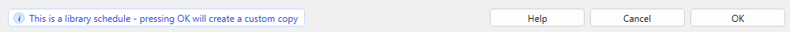
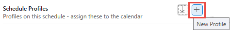
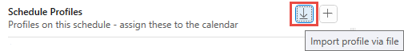
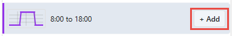
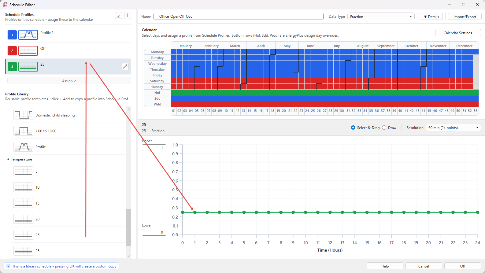
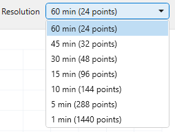
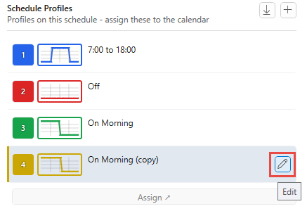
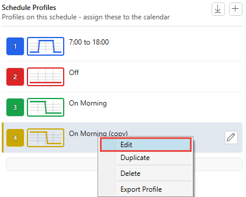
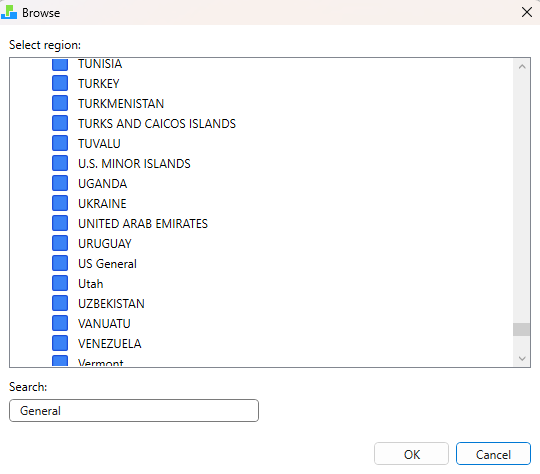

Editor visual de horarios
Función beta
El Editor visual de horarios permite revisar y editar programaciones de forma gráfica. En v2027.1, esta función se encuentra en fase de prueba beta.
Puede usar el Editor de horarios para definir perfiles diarios, asignarlos en un calendario anual, editar curvas horarias en un gráfico y guardar la programación resultante en el modelo al pulsar Aceptar.
El Editor de horarios puede leer cualquier componente de programación existente de DesignBuilder, tanto si se guardó en formato compacto como en formato de programaciones 7/12. Al guardar, los datos de programación siempre se almacenan en formato compacto. El Editor visual de horarios no permite elegir entre programaciones compactas y 7/12.
Consulte Programaciones 7/12 - Definidas mediante perfiles para obtener información sobre el formato anterior con cuadrícula de meses y días de la semana.
Consulte también Programaciones, Programaciones compactasy el Ejemplo práctico de este artículo.
Activar el Editor visual de horarios
En el cuadro de diálogo Opciones de programa, abra la pestaña Diálogos . En el apartado Editor de horarios , marque Usar el editor visual de horarios. Con esta opción activada, las programaciones compactas, 7/12 y diarias se abren en el Editor visual de horarios. Si se desactiva, DesignBuilder abre el editor de horarios de texto anterior.

Pestaña Diálogos de Opciones de programa con la opción Usar el editor visual de horarios marcada
Abrir una programación
Las programaciones suelen abrirse desde la pantalla Editar. Haga clic en un elemento que permita buscar una programación y, si el modo Aprendizaje está activado, abra la lista Programaciones en la pestaña Datos, seleccione la programación y haga clic en el icono del lápiz Editar/Ver objeto seleccionado de la barra de herramientas del panel Información.
También puede acceder a los datos de programación de las siguientes formas:
-
desde la pestaña Componentes de la pantalla de inicio, para ver o editar componentes de biblioteca si no hay ningún archivo abierto;
-
desde la pestaña Componentes del panel Navegador, para ver o editar componentes del modelo si hay un archivo abierto;
-
haciendo doble clic en el icono de programaciones en los datos del modelo;
-
desde el panel Datos, seleccionando una programación en la lista Programaciones y haciendo clic en Editar en la barra de herramientas;
-
haciendo clic en Editor de horarios en el cuadro de diálogo Programaciones con una programación seleccionada.

Lista Programaciones del panel Datos con el botón Editar en la barra de herramientas
Las programaciones también se asignan a zonas y actividades en las pestañas de datos del modelo, por ejemplo en el campo Programación de la pestaña Actividad. Abra la programación desde el panel Datos para editar sus perfiles y su calendario.

Pestaña Actividad con el campo Programación vinculado a una programación
Al editar una programación de biblioteca, pulse Aceptar para crear una copia personalizada en el modelo. La programación original de la biblioteca se conserva. En la parte inferior del editor aparece el aviso «Esta programación pertenece a la biblioteca. Al pulsar Aceptar se creará una copia personalizada».

Figura. Aviso sobre las programaciones de biblioteca en la parte inferior del editor
Distribución de la pantalla
La ventana del Editor de horarios se divide en las zonas que se muestran a continuación.

Ventana principal del Editor visual de horarios con la paleta, el calendario y el gráfico de perfiles. Las llamadas numeradas del 1 al 6 corresponden a los puntos de la lista siguiente.
-
Perfiles de la programación (arriba a la izquierda) muestra los perfiles de esta programación. Use Asignar para vincularlos a días del calendario.
-
Biblioteca de perfiles (abajo a la izquierda) contiene plantillas de perfiles reutilizables. Use + Añadir para copiar una plantilla a la programación.
-
Nombre, Tipo de datos, Detalles e Importar/Exportar (arriba) reúnen los metadatos de la programación y las operaciones con archivos.
-
Calendario (en el centro) permite asignar un perfil a cada día del año y a las filas de días de diseño.
-
Gráfico de perfiles (abajo) permite editar la curva horaria del perfil seleccionado.
-
Ayuda, Cancelar y Aceptar Los botones (en la parte inferior) permiten guardar los cambios en el modelo o descartarlos.
Más información:
Secuencia habitual de edición
Para crear o modificar una programación en el Editor visual de horarios:
-
Añada o cree perfiles en la paleta Perfiles de la programación (o cópielos de la Biblioteca de perfiles).
-
Seleccione días en el calendario y haga clic en Asignar para vincular un perfil a esos días.
-
Seleccione un perfil de la paleta y edite su curva horaria en el gráfico (o use Editar perfil para introducir los valores).
-
Indique los valores de Nombre, Tipo de datos, y complete los campos de Detalles que sean necesarios.
-
Pulse el botón Aceptar del Editor de horarios para guardar la programación en el modelo como Schedule:Compact.
Consulte el Ejemplo práctico para ver cómo configurar una programación completa de ocupación para una oficina.
Consejo: Además de servir para definir la transparencia de los bloques de componente, las programaciones intervienen en las simulaciones solo cuando la opción de modelo Temporización está configurada como Programaciones. Consulte Programaciones.
Consulta también Horarios, programaciones y perfiles .
Trabajar con perfiles y el calendario
La lista Perfiles de la programación , situada en la parte superior del panel izquierdo, contiene los perfiles diarios utilizados en esta programación. Asigne esos perfiles a los días del calendario en el centro de la ventana.
La Biblioteca de perfiles , situada en la parte inferior del panel izquierdo, contiene plantillas reutilizables que puede copiar a la programación.
Las opciones de visualización del calendario y las filas de días de diseño se describen en Configuración del calendario y días de diseño.
Las curvas de los perfiles se editan en el gráfico. Consulte Editar perfiles diarios.
Paleta Perfiles de la programación
Cada fila de la paleta muestra una muestra de color, un gráfico pequeño de la curva diaria, el nombre del perfil y el número de días del calendario que utilizan ese perfil (oSin asignar si no se utiliza en ningún día). Cuando las etiquetas de celdas del calendario se configuran como # en Configuración del calendario, la muestra de color también indica el índice de la paleta (1, 2, 3, …) que se utiliza en las celdas del calendario.
Haga clic en una fila para seleccionarla. El gráfico de perfiles en la parte inferior de la ventana mostrará la curva de ese perfil.
Añadir un perfil
-
Haga clic en el botón + de la barra de herramientas de Perfiles de la programación .

-
DesignBuilder añade un perfil en blanco con la resolución temporal actual de la programación. El perfil se denomina «Nuevo perfil» o «Nuevo perfil (2)» y así sucesivamente si el nombre ya está en uso.
-
Puede editar la curva en el gráfico, por ejemplo arrastrando los puntos, o seleccionar la opción Editar perfil del menú contextual para editar directamente la secuencia de valores del perfil.
El perfil se ha añadido a la paleta.
Importar un solo perfil
Pendiente: Falta explicar cómo generar archivos .dbp que se puedan importar.
-
Haga clic en el icono de importación de perfiles de la barra de herramientas de Perfiles de la programación.

-
Seleccione un archivo de extensión «.dbp» para continuar.
El perfil se añade a la paleta.
Nota: El color del perfil recién añadido se muestra en un tono claro en la lista Perfiles de la programación hasta que se selecciona y se utiliza en el calendario.
Color del perfil
Haga clic en la muestra de color a la izquierda del elemento en la lista Perfiles de la programación para abrir el selector de color. Véase más abajo.

Este color se aplica a las celdas del calendario asignadas a ese perfil y a la línea del gráfico.
Menú contextual
Haga clic con el botón derecho en un perfil de la paleta para abrir el menú contextual.

Figura. Menú contextual de un perfil de la paleta
-
Editar — abre el cuadro de diálogo Editar perfil.
-
Duplicar — crea una copia cuyo nombre termina en «(copia)».
-
Cambiar nombre — cambia el nombre del perfil solo en esta programación.
-
Eliminar — elimina el perfil de la programación (véase la nota más abajo).
-
Exportar perfil — guarda el perfil en un archivo de extensión «.dbp» en el disco.
Nota: El último perfil de una programación no se puede eliminar. Si elimina un perfil que aún está asignado en el calendario, los días correspondientes se reasignan al perfil con mayor número de asignaciones.
Biblioteca de perfiles
La Biblioteca de perfiles muestra carpetas de plantillas, por ejemplo Valores predeterminados NCM del Reino Unido. El contenido de las carpetas depende de su licencia de DesignBuilder y de su región.
Las carpetas predefinidas de la biblioteca suelen ser de solo lectura. Use + Añadir para copiar una plantilla a la programación sin modificar la plantilla original de la biblioteca.
Copiar un perfil de biblioteca a la programación
-
Haga clic en el perfil en el árbol de la Biblioteca de perfiles .
-
Haga clic en el botón + Añadir situado a la derecha del perfil.

El perfil se copia a Perfiles de la programación , pero aún no se asigna a ningún día del calendario. Un mensaje breve confirma que el perfil está disponible para asignarlo.
Al hacer clic en un perfil de biblioteca, su curva se muestra a la derecha en el gráfico como vista previa. El subtítulo del gráfico indica «solo lectura». La curva no se puede editar en esta vista previa.
Consejo: También puede copiar un perfil de biblioteca a la paleta Perfiles de la programación y aplicarlo al calendario en un solo paso. Seleccione el perfil de biblioteca y un conjunto de días en el calendario. A continuación, haga clic en el botón Asignar de la sección Perfiles de la programación.
Los perfiles de la paleta se pueden editar.

Vista previa de un perfil de biblioteca en el gráfico de perfiles (solo lectura)
Si su licencia permite editar las carpetas de biblioteca, pulse <F2> para cambiar el nombre del elemento seleccionado y <Delete> para eliminarlo. Para cambiar el nombre o eliminar perfiles de la paleta, use su menú contextual.
Asignar perfiles al calendario
Para asignar un perfil de programación a varios días del calendario:
-
Seleccione una o varias celdas del calendario. Consulte el apartado Selección en el calendario más abajo.
-
Haga clic en el perfil que desea asignar en la paleta Perfiles de la programación o haga clic en un perfil de biblioteca para asignarlo directamente.
-
Haga clic en el botón Asignar . El texto del botón indica cuántos días o filas de días de diseño se han seleccionado (por ejemplo, «Asignar a 12 días»).
El perfil se asigna a los días seleccionados.

Botón Asignar con el texto «Asignar a 52 días» cuando hay celdas seleccionadas en el calendario
Nota: El botón Asignar permanece desactivado hasta que se selecciona al menos una celda del calendario.
Si el perfil de biblioteca aún no está en la paleta, Asignar lo copia a la paleta y lo aplica a la selección en un solo paso.
Si ya existe un perfil de paleta con la misma curva, el botón muestra «El perfil ya existe» y Asignar queda desactivado. Haga clic en el perfil equivalente de la paleta y asígnelo.

«El perfil ya existe» cuando un perfil de biblioteca coincide con uno de la paleta
Cuando se selecciona un perfil de biblioteca que aún no está en la paleta, el texto del botón puede empezar por «Usar y» antes de la acción de asignación.
Nota: Si asigna una programación con un valor constante > 1 a Fracción en Tipo de datos, se normaliza a un valor fraccionario < 1 dividiéndolo por 100. Por ejemplo, 25 pasa a 0.25. Consulte la captura de pantalla del ejemplo. 

Selección en el calendario
El calendario muestra los meses en columnas y los días de la semana en filas. Los números de semana aparecen en la parte inferior. Cada celda lleva el color del perfil que tiene asignado.

Selección con el ratón
Para seleccionar un solo día, haga clic en su celda. Si solo hay una celda seleccionada, haga clic en ella de nuevo para borrar la selección.
Para seleccionar un bloque rectangular de días, haga clic en la primera celda y arrastre hasta la última. Al soltar el botón del ratón, la selección se sustituye por las celdas que quedan dentro del rectángulo.
Puede seleccionar días ordinarios del año y filas de días de diseño (Hol, Sdd, Wdd, y, opcionalmente, Cd1 y Cd2) en una misma operación antes de pulsar Asignar.
Para seleccionar varias celdas o bloques, mantenga pulsada la tecla <Ctrl> mientras hace clic con el ratón. Para seleccionar un intervalo de celdas, mantenga pulsada la tecla <Shift> mientras hace clic.
Las celdas inactivas de los bordes del calendario, que se muestran en gris, no se pueden seleccionar.
Selección por bandas de encabezado
También puede arrastrar sobre las zonas de encabezado para seleccionar bandas de días rápidamente:
-
Encabezados de mes — selecciona todos los días de uno o varios meses.
-
Encabezados de columna — selecciona una banda vertical de días (columnas de semanas).
-
Encabezados de fila — selecciona una fila completa de un día de la semana, por ejemplo todos los lunes, o una fila de día de diseño, por ejemplo Hol.
Al arrastrar, los encabezados resaltados muestran la banda activa. Si la banda ya coincide con la selección actual, haga clic en ella o vuelva a arrastrar sobre ella para borrar la selección.

Selección de marzo a mayo arrastrando sobre los encabezados de los meses
Paleta vacía
Si no se ha añadido ningún perfil a la programación, la paleta muestra «No hay perfiles asignados». Use el botón + de la barra de herramientas de la paleta o el botón + Añadir de la biblioteca. También puede importar un perfil antes de asignarlo.
Si la sección Perfiles de la programación no está visible, consulte Si no aparece la paleta.
Editar perfiles diarios
Los perfiles diarios definen los valores horarios de medianoche a medianoche (0–24 horas). Puede editarlos en el gráfico de perfiles de la parte inferior del Editor de horarios o en el cuadro de diálogo Editar perfil correspondiente.
Asigne los perfiles a los días del calendario antes o después de editar las curvas. Consulte Trabajar con perfiles y el calendario.
Gráfico de perfiles
Si no se ha seleccionado ningún perfil, el área del gráfico muestra «Seleccione un perfil de la paleta o de la biblioteca para ver su gráfico».
Al seleccionar un perfil de la paleta, el encabezado del gráfico muestra su nombre y un subtítulo con el formato nombre — tipo de programación.
Nota: Si el Tipo de datos de la programación es «Operación», el subtítulo puede mostrar «Fracción», porque así se representa la programación en los datos de EnergyPlus para la simulación.
Cuando se previsualiza un perfil de biblioteca que no está en la paleta, el gráfico es de solo lectura y el subtítulo incluye «solo lectura». Consulte Previsualizar perfiles de biblioteca.
Modos de edición
En la parte superior derecha del gráfico, utilice los botones de opción Seleccionar y arrastrar y Dibujar para elegir el modo de edición del perfil:
-
Seleccionar y arrastrar — haga clic en los puntos y arrástrelos para cambiar los valores. Use este modo para hacer ajustes precisos.
-
Dibujar — haga clic en el gráfico o arrastre sobre él para dibujar la curva.

Modo Seleccionar y arrastrar con un rectángulo de selección en el gráfico de perfiles

Modo Dibujar con el gráfico de perfiles y una resolución de 60 min
Seleccionar y ajustar puntos
En el gráfico puede:
-
arrastrar sobre un área vacía para seleccionar varios puntos con un rectángulo de selección;
-
mantener pulsada la tecla <Ctrl> y hacer clic en un punto para añadirlo a la selección o quitarlo;
-
mantener pulsada la tecla <Shift> y hacer clic en un punto para seleccionar el intervalo entre el último punto pulsado y el punto actual;
-
arrastrar los puntos seleccionados para modificar todos sus valores a la vez (un texto emergente indica cuántos puntos están seleccionados y su intervalo de valores);
-
mantener pulsada la tecla <Ctrl> mientras arrastra para ajustar los valores con mayor precisión;
-
mantener pulsada la tecla <Shift> mientras arrastra para mover los puntos en incrementos del 10% del eje vertical del gráfico;
-
situar el puntero sobre un punto para ver la hora y el valor en un texto emergente;
-
hacer doble clic en un punto para editar el valor en el propio gráfico y pulsar <Enter> para confirmar o <Esc> para cancelar;
-
pulsar <Esc> cuando el gráfico tiene el foco para cancelar la operación en curso.

Gráfico de perfiles con varios puntos seleccionados y un texto emergente con su intervalo de valores
Resolución
La lista desplegable Resolución establece el paso temporal de toda la programación. Todos sus perfiles utilizan la misma resolución.

Lista desplegable Resolución en el gráfico de perfiles
|
Paso |
Puntos por día |
|---|---|
|
60 min |
24 |
|
45 min |
32 |
|
30 min |
48 |
|
15 min |
96 |
|
10 min |
144 |
|
5 min |
288 |
|
1 min |
1440 |
Al cambiar la resolución, DesignBuilder actualiza todos los perfiles de la programación al nuevo paso temporal. Si algún perfil no se puede actualizar, puede aparecer un aviso.
Límites superior e inferior
Los campos Superior e Inferior establecen la escala del gráfico y el intervalo permitido para los valores del perfil. Cuando el tipo de datos de la programación lo requiere, se indican las unidades, por ejemplo °C.
El editor resalta los límites no válidos. Corríjalos para habilitar el botón Aceptar. Consulte Mensajes de validación.

Límite superior no válido con mensaje de validación y botón Aceptar desactivado
Vista previa de perfiles de biblioteca
Si selecciona en la Biblioteca de perfiles un perfil que aún no está en la paleta Perfiles de la programación, el gráfico es de solo lectura. Copie el perfil a la paleta para editarlo. Consulte Previsualizar perfiles de biblioteca.
Cuadro de diálogo Editar perfil
Para abrir el cuadro de diálogo Editar perfil:
-
haga clic en el icono del lápiz en la fila de un perfil de la paleta Perfiles de la programación, o

-
haga clic con el botón derecho en el perfil y seleccione Editar.



Cuadro de diálogo Editar perfil
-
Nombre — nombre del perfil (obligatorio).
-
Datos horarios — valores numéricos separados por comas. La cantidad de valores debe corresponder a la resolución actual, por ejemplo 24 valores con una resolución de 60 minutos. En las programaciones de fracción, los valores suelen estar entre 0 y 1.
-
Eliminar elimina el perfil (opción no disponible para el último perfil de la programación).
-
Duplicar crea una copia en la paleta.
-
Cancelar cierra el cuadro de diálogo sin guardar.
-
Aplicar cambios guarda los valores y cierra el cuadro de diálogo.
El cuadro de diálogo puede indicar que falta el nombre, que el número de valores horarios es incorrecto, que el formato numérico es inválido o que algún valor supera los límites superior o inferior.
Metadatos y detalles de la programación
En la parte superior del Editor de programaciones, los campos Nombre, Tipo de datos, y, opcionalmente, Detalles identifican la programación en el modelo y determinan cómo se interpretan los valores de los perfiles.
Distinga el Tipo de datos (el tipo de valores que contienen los perfiles, por ejemplo Operación o Temperatura) del formato de EnergyPlus Schedule:Compact que el editor escribe al pulsar Aceptar. El tipo de datos se establece en la parte superior del Editor de horarios.
Nombre y tipo de datos
-
Nombre es el título de la programación que se guarda con el modelo. Pulse <Enter> para salir del campo.
-
Tipo de datos define el tipo de valores que contienen los perfiles y fija por defecto sus límites superior e inferior en el gráfico.
DesignBuilder suele ofrecer los siguientes tipos:
-
Operación — programaciones de encendido y apagado con valores entre 0 y 1, equivalentes a las programaciones compactas de Fracción en EnergyPlus.
-
Cualquier número — programaciones numéricas generales. Los valores pueden superar 1. En la simulación, las ganancias (por ejemplo, la densidad de ocupación en personas/m²) se multiplican por el valor de la programación. Consulte Programaciones compactas.
En función de la licencia, pueden aparecer más tipos de datos de programación, como Temperatura y Potencia.
Al cambiar el tipo de datos, se actualiza el intervalo de valores permitidos en el gráfico.
Consejo: Para mayor claridad, DesignBuilder recomienda utilizar programaciones compactas de tipo Fracción . Las programaciones compactas de consigna de temperatura suelen usar los valores codificados 0, 0.5 y 1.0 aun cuando controlan consignas. Siga la plantilla que esté usando.
Nota importante: Aunque la interfaz principal muestre unidades imperiales (IP), debe introducir en unidades del SI (°C) los valores de las programaciones compactas de temperatura que se pasan a EnergyPlus. Consulte Programaciones compactas.
Detalles
Haga clic en el botón Detalles para desplegar los campos opcionales. Vuelva a pulsarlo para contraerlos.

Metadatos de la programación con Detalles desplegado
-
Categoría — selecciónela en la lista desplegable. Las categorías agrupan las programaciones en la base de datos y en los informes, igual que en la pestaña General del cuadro de diálogo Programaciones.
-
Fuente — indica la procedencia de la programación, como biblioteca, definida por el usuario o importada. Pulse … para elegir entre fuentes ya utilizadas en otras programaciones del modelo.
Cuadro de diálogo Seleccionar fuente

-
Región — vincula la programación con una región del modelo. Haga clic en el botón pequeño a la derecha del cuadro de texto de regiones para seleccionar una región. Las carpetas de la biblioteca de perfiles pueden depender de la región y de la licencia.

Cuadro de diálogo Seleccionar región

-
Descripción — notas de varias líneas que se guardan con la programación.
En los cuadros de diálogo de selección, utilice el cuadro de búsqueda para filtrar el árbol. Haga clic en un elemento y pulse Aceptar, o haga doble clic en el elemento para confirmar. Cancelar cierra el cuadro de diálogo sin modificar el campo.
Importar/Exportar
El botón Importar/Exportar abre un menú de operaciones con archivos de programaciones completas. Consulte Importar y exportar programaciones.
En el gráfico, los perfiles de biblioteca solo se pueden previsualizar hasta que se copian a la paleta Perfiles de la programación. Consulte Previsualizar perfiles de biblioteca.
Importar y exportar programaciones
Puede importar y exportar datos a dos niveles: programaciones completas desde el menú Importar/Exportar de la parte superior derecha del Editor de horarios, o perfiles individuales desde la paleta Perfiles de la programación.
Menú Importar/Exportar
El menú Importar/Exportar tiene tres opciones:
-
Importar archivo de programación abre desde el disco un archivo de programación.
-
Importar programación como texto permite pegar los datos de una programación (consulte el apartado siguiente).
-
Exportar archivo de programación guarda en el disco la programación actual (nombre predeterminado VisualSchedule_*.vsch).

Menú Importar/Exportar
Importar archivo de programación
El cuadro de diálogo admite estos formatos:
-
.vsch formato de programación visual de DesignBuilder.
-
.csv datos diarios u horarios de programación en CSV.
-
.idf objetos de programación IDF de EnergyPlus.
-
.epjson objetos de programación epJSON de EnergyPlus.
También puede elegir Todos los archivos compatibles o Todos los archivos.
Resultados de la importación
Al importar un archivo o pegar texto, el calendario, la paleta y las filas de días de diseño cambian de la siguiente manera:
| Estado | Calendario | Paleta | Filas de días de diseño |
| Programación completa | Se sustituye | Se sustituye | Se actualiza |
| Datos en formato compacto o .vsch | Coincide con lo importado | Coincide con lo importado |
Como en el archivo |
| Solo perfiles | Sin cambios de asignación. Las curvas pueden actualizarse para ajustarse a la resolución. | Se añaden los perfiles | Se actualizan si es necesario |
| No válido | Sin cambios | Sin cambios | Sin cambios |
Después de una importación completa correcta puede aparecer «Se ha aplicado la programación importada. El calendario, la paleta y los días de diseño coinciden ahora con el archivo».
Después de importar solo perfiles, puede aparecer una confirmación breve de que se han añadido perfiles nuevos. Las curvas del calendario y de los días de diseño existentes pueden actualizarse para ajustarse a la resolución importada. Seleccione los perfiles nuevos en Perfiles de la programación antes de asignarlos.
Importar programación como texto

Cuadro de diálogo Importar programación como texto con el área de pegado vacía

Figura. Importar programación como texto con datos válidos y el botón Importar activado
Pegue el texto de la programación en el área de texto.
La línea de estado situada debajo del área de pegado se actualiza a medida que escribe. Pueden aparecer los mensajes siguientes:
-
Comprobando… se están validando los datos pegados.
-
No válido no se reconoce el formato. El botón Importar se mantiene desactivado.
-
Perfiles solo se importarán los datos de perfiles.
-
Programación completa se importará la programación completa.
Se admiten los formatos IDF, JSON/epJSON, CSV (diario u horario) y texto de ocupación DaySim (solo perfiles).
El botón Importar solo se activa si los datos son válidos.
Exportar archivo de programación
Exporta la programación actual, incluidos los perfiles, las asignaciones del calendario y los metadatos. Use los archivos exportados como copia de seguridad o para editar la programación fuera de DesignBuilder y volver a importarla.
Importar y exportar perfiles
Para importar un solo perfil a la paleta, haga clic en el icono de importación de perfiles de la barra de herramientas de Perfiles de la programación y seleccione un archivo de extensión «.dbp» para continuar. Consulte el apartado siguiente.

Para exportar un perfil de la paleta, haga clic con el botón derecho en el perfil y seleccione Exportar perfil. Consulte el apartado siguiente.

Formatos de datos
El Editor de horarios admite varios formatos de datos para importar y exportar.
.vsch es el formato de archivo preferido para hacer copias de seguridad y volver a importar los datos a DesignBuilder.
Los archivos CSV pueden contener los datos diarios de un año (programación completa) o filas con valores horarios (solo perfiles). Los archivos IDF y epJSON pueden contener objetos Schedule:Compact y objetos relacionados. Los tipos de día de diseño de los datos compactos se corresponden con las filas Hol, Sdd, Wdd, Cd1 y Cd2 del calendario. Consulte Programaciones compactas y Fechas de vigencia.

Fragmento IDF de una programación compacta
Consejo: Después de una importación completa correcta, revise el calendario y las filas de días de diseño antes de pulsar Aceptar para guardar la programación en el modelo.
Editor visual de horarios - Configuración del calendario y días de diseño
El calendario situado en la parte superior central del Editor de horarios asigna un perfil diario a cada día del año. Las filas adicionales de la parte inferior asignan perfiles para las simulaciones de días de diseño en EnergyPlus (Hol, Sdd, Wdd y, opcionalmente, Cd1 y Cd2).
Para asignar perfiles a celdas del calendario, consulte Trabajar con perfiles y el calendario.
Configuración del calendario
Haga clic en Configuración del calendario encima de la cuadrícula para abrir el panel de ajustes. El panel permanece abierto hasta que hace clic fuera de él o pulsa <Esc>.

Panel emergente Configuración del calendario
Etiquetas de celdas
Elija qué texto aparece en las celdas del calendario:
-
Ninguna solo se muestra el color.
-
Día número de orden del día dentro del año.
-
Fecha día del mes (1–31).
-
# índice de la paleta (1, 2, 3, …), que coincide con los números de las filas de la paleta.
Consejo: Use # para comparar el calendario con la lista de perfiles de la izquierda.

Calendario con el número de índice de la paleta en cada celda
Día de inicio del año
Seleccione el día de la semana que aparece en la primera fila de la cuadrícula. Esto determina el orden de las filas de días de la semana y la alineación de las semanas con las columnas de meses.
Días de diseño personalizados
Al activar Días de diseño personalizados , aparecen dos filas adicionales debajo de las filas de días de diseño estándar:
-
Cd1 (día de diseño personalizado 1)
-
Cd2 (día de diseño personalizado 2).
Asigne perfiles a estas filas del mismo modo que para Hol, Sdd y Wdd.

Calendario con las filas Cd1 y Cd2 de días de diseño personalizados
Año bisiesto
Con esta opción activada, febrero tiene 29 días. Si se desactiva, febrero tiene 28 días.
Consejo: Esta opción se utiliza principalmente para análisis en fase de uso con datos meteorológicos de un año real.
Interpretar la cuadrícula del calendario
Las columnas representan los meses, de enero a diciembre. Abajo aparecen los números de semana (01–53). Las primeras filas corresponden a los días de la semana, en el orden que establece Día de inicio del año, y a continuación aparecen las filas de días de diseño. El color de cada celda coincide con el color del perfil que tiene asignado en la paleta.
Filas de días de diseño de EnergyPlus
El subtítulo del calendario indica que sus últimas filas sirven para sustituir los perfiles de los días de diseño de EnergyPlus. Estas filas no representan fechas del calendario. Definen el perfil diario que EnergyPlus utiliza para cada tipo de día For: en los datos de programación compacta exportados. Consulte Programaciones compactas.
|
Fila del calendario |
Palabra clave For: de la programación compacta |
Uso habitual |
|---|---|---|
|
Hol |
Holidays |
Días festivos |
|
Sdd |
SummerDesignDay |
Día de diseño o dimensionado de refrigeración |
|
Wdd |
WinterDesignDay |
Día de diseño o dimensionado de calefacción |
|
Cd1 |
CustomDay1 |
Día de diseño 1 definido por el usuario |
|
Cd2 |
CustomDay2 |
Día de diseño 2 definido por el usuario |
En una programación compacta, las demás palabras clave For: (Weekdays, Weekends, Monday–Sunday, AllDays, AllOtherDays) se representan mediante asignaciones en las filas principales de los días de la semana, sin filas propias en el calendario.
Sitúe el puntero sobre una celda de día de diseño para ver el nombre del tipo de fila en un texto emergente.
Nota importante: Al configurar programaciones que se usarán en simulaciones con HVAC Compacto o Detallado, tenga en cuenta si la programación estará activa o inactiva durante las simulaciones de dimensionado de calefacción y refrigeración utilizadas para dimensionar automáticamente los equipos. Por lo general, las ganancias internas deben excluirse del dimensionado de calefacción. Seleccione el perfil Desactivado en la fila Wdd si la programación se aplica a las ganancias internas, la ocupación, la iluminación u otros usos similares. Consulte el Ejemplo 1 de Programaciones compactas y el Ejemplo práctico más abajo.
Filas de días de la semana y de días de diseño
Al asignar un perfil a las celdas de lunes a domingo, se establece la programación para esas fechas a lo largo del año, conforme a las reglas del formato compacto y a los intervalos de fechas Through: de los datos exportados. Asignar un perfil a Hol, Sdd, o Wdd establece el perfil que se usa cuando la simulación hace referencia a ese tipo de día.
Al pulsar Aceptar, las asignaciones de días de diseño se guardan con la programación compacta en el modelo y en la exportación a EnergyPlus.
Ejemplo práctico
Este ejemplo crea una programación compacta sencilla de ocupación de una oficina, con ocupación entre las 09:00 y las 17:00 los días laborables y sin ocupación el resto del tiempo. Se usan dos perfiles diarios en el calendario. Antes de empezar, active el Editor visual de horarios en Opciones de programa y abra una programación.
Paleta y asignaciones del calendario del ejemplo una vez terminadas
Paso 1 — Añadir perfiles de la biblioteca
1. Abra la programación en el Editor visual de horarios.
2. En la Biblioteca de perfiles, busque plantillas como Desactivado y una curva de ocupación diurna, o cree perfiles nuevos en el Paso 2.
3. Haga clic en Desactivado y luego en + Añadir para copiar el perfil a la paleta.
4. Repita la operación con un perfil de ocupación, o pulse + en la barra de herramientas de la paleta para crear un perfil y dibujar la curva en el gráfico.
Paleta del ejemplo con los perfiles Desactivado y Ocupado
Paso 2 — Editar el perfil de ocupación
1. Haga clic en el perfil de ocupación de la paleta.
2. En el gráfico, use Seleccionar y arrastrar o Dibujar para que los valores sean bajos durante la noche, suban a las 09:00, se mantengan hasta las 17:00 y después bajen. En una programación de fracción, use 0 para los periodos sin ocupación y 1 para los periodos con ocupación.
3. Si lo desea, abra Editar perfil en el menú contextual y cambie los nombres de los perfiles a Ocupado y Sin ocupación.
Gráfico del perfil de ocupación del ejemplo, de 9 a 17
Paso 3 — Asignar los perfiles a días laborables y fines de semana
1. Haga clic en el perfil Ocupado en la paleta.
2. En el calendario, arrastre sobre los encabezados de las filas de lunes a viernes para seleccionar los días laborables, o seleccione las celdas de los días laborables del año.
3. Haga clic en Asignar.
4. Haga clic en Sin ocupación, seleccione las filas de sábado y domingo y haga clic en Asignar.
Los perfiles quedan asignados en el calendario.
Colores del calendario para días laborables y fines de semana en el ejemplo
Paso 4 — Días de diseño
Para las programaciones de operación que controlan ganancias internas (ocupación, iluminación y equipos), siga el mismo criterio que en el Ejemplo 1 de Programaciones compactas:
-
Sdd — use el mismo perfil activado que en los días laborables si los equipos funcionan el día de diseño de verano.
-
Wdd — use el perfil Desactivado para evitar que el dimensionado de calefacción se reduzca por ganancias internas no previstas.
-
Hol — normalmente se desactivan la iluminación y la ocupación, salvo si hay ocupación los días festivos.
Nota importante: Un error habitual es incluir las ganancias internas de ocupación, ordenadores o iluminación en las simulaciones de dimensionado de calefacción. Esto hace que los sistemas de calefacción queden infradimensionados. Como regla general, excluya todas las ganancias internas de estas simulaciones. Asigne un perfil desactivado a la fila Wdd de las programaciones que controlen ganancias internas.
Consulte Filas de días de diseño de EnergyPlus.
Paso 5 — Dar nombre a la programación y guardar
-
Introduzca un Nombre, por ejemplo Ocupación de oficina, y seleccione el Tipo de datos, por ejemplo Operación.
-
Haga clic en Detalles si necesita indicar la categoría, la fuente o la región.
-
Pulse Aceptar para guardar la programación compacta en el modelo.
Consulte también Trabajar con perfiles y el calendario y Editar perfiles diarios.
Programaciones compactas y fechas de vigencia
El Editor visual de horarios edita los mismos datos de programaciones compactas que usa EnergyPlus. Al pulsar Aceptar, DesignBuilder guarda la programación en el modelo y la incluye en la exportación de la simulación.
Consulte Programaciones compactas para ver las definiciones completas de los campos de EnergyPlus (Through, For, Until, Value).
Qué guarda el editor
En el Editor visual de horarios puede editar los siguientes datos:
-
Perfiles — curvas horarias diarias, equivalentes a los pares Until / Value de los datos en formato compacto.
-
Asignaciones del calendario — qué perfil se aplica a qué días, equivalente a los tipos de día For: y a los bloques estacionales Through:.
-
Filas de días de diseño — Hol, Sdd, Wdd, Cd1 y Cd2 se corresponden con palabras clave For: del formato compacto. Consulte Filas de días de diseño de EnergyPlus.
Tipo de datos y programaciones de fracción
Como en todas las programaciones compactas, DesignBuilder suele recomendar el tipo Fracción por claridad, incluso para muchas programaciones de consignas de temperatura. Puede seleccionar Cualquier número para utilizar valores superiores a 1. Tenga en cuenta que, en la simulación, los valores máximos de las ganancias (por ejemplo, personas/m²) se multiplican por el valor de la programación.
Si selecciona Operación en el campo Tipo de datos del Editor visual de horarios, el subtítulo del gráfico puede mostrar Fracción porque así se representa la programación en la simulación.
Nota importante: Aunque la interfaz principal muestre unidades imperiales (IP), debe introducir en unidades del SI (°C) los valores de las programaciones compactas de temperatura, ya que se pasan directamente a EnergyPlus.
Fechas de vigencia y cambios en el calendario
Cada programación compacta debe cubrir el año completo con fechas Through: consecutivas hasta el 31 de diciembre. El Editor visual de horarios mantiene la información equivalente al asignar perfiles en el calendario. La importación o exportación de datos IDF o de texto en formato compacto puede conservar los bloques estacionales Through que aparezcan en los datos de origen.
Nota: Si las fechas de los días de diseño de invierno y verano de las opciones de modelo quedan fuera del bloque Through en el que se definió WinterDesignDay o SummerDesignDay, las simulaciones de dimensionado pueden utilizar un perfil incorrecto. Consulte el Ejemplo 3 de Programaciones compactas.
Si la programación se importó con límites estacionales Through: explícitos y esos límites son importantes para el modelo, revise la programación exportada después de hacer cambios importantes en el calendario.
Programaciones 7/12
Si una programación está guardada en formato 7/12, el Editor visual de horarios la lee y muestra los perfiles y asignaciones de calendario equivalentes. Al pulsar Aceptar, la programación se guarda como datos Schedule:Compact. Consulte Programaciones 7/12 - Definidas mediante perfiles para conocer el formato original con cuadrícula de meses y días de la semana.
Importar
Al pegar o importar datos IDF, epJSON o texto en formato compacto, pueden incluirse las asignaciones Through completas. Si el estado de la importación es Programación completa, el calendario y la paleta se sustituyen para que coincidan con los datos importados. Consulte Resultados de la importación.
Atajos de teclado
Los siguientes atajos de teclado se pueden utilizar en el Editor de horarios.
Las carpetas de plantillas predefinidas de la biblioteca suelen ser de solo lectura. Para cambiar el nombre o eliminar perfiles de la paleta, use su menú contextual.
|
Tecla |
Acción |
|---|---|
|
Árbol de la Biblioteca de perfiles |
|
|
<F2> |
Cambia el nombre del elemento o la carpeta seleccionada en el árbol de la Biblioteca de perfiles, si su licencia permite editar la biblioteca. |
|
<Del> |
Elimina el elemento seleccionado en el árbol de la biblioteca si su licencia permite editarla. |
|
Calendario |
|
|
<Esc> |
Cierra el panel Configuración del calendario si está abierto. |
|
<Ctrl> + clic del ratón |
Añade o quita un día o un conjunto de días de la selección. |
|
<Shift> + clic del ratón |
Selecciona un intervalo de días. |
|
Gráfico de perfiles |
|
|
<Esc> |
Cancela la interacción actual con el gráfico si este tiene el foco. |
|
<Ctrl> + clic del ratón |
Añade o quita un punto de la selección. |
|
<Shift> + clic del ratón |
Selecciona un intervalo de puntos. |
|
<Ctrl> + arrastrar con el ratón |
Permite ajustar con mayor precisión los valores al arrastrar los puntos seleccionados. |
|
<Shift> + arrastrar con el ratón |
Ajusta el movimiento a incrementos del 10% del eje vertical del gráfico. |
|
<Enter> |
Confirma la edición de un valor numérico en el propio punto. |
|
Nombre de la programación |
|
|
<Enter> |
Sale del campo de nombre de la programación. |
Consulte también Editar perfiles diarios.
Solución de problemas y guardado
Guardar y cerrar
Aceptar
Al pulsar Aceptar, la programación se guarda en DesignBuilder y se cierra el Editor de horarios. Se guardan en el modelo el Nombre, la Descripción, la Categoría, la Región, la Fuente, el Tipo de datos y los datos en formato compacto.
En las programaciones del modelo, el texto emergente del botón Aceptar es «Guardar cambios».
Al editar una programación de biblioteca, aparece el aviso «Esta programación pertenece a la biblioteca. Al pulsar Aceptar se creará una copia personalizada». El texto emergente del botón Aceptar es «Guardar como copia personalizada».
Aviso sobre las programaciones de biblioteca en la parte inferior del editor
Aceptar permanece desactivado mientras haya errores en los campos Superior e Inferior del gráfico.
Cancelar
Al pulsar Cancelar se cierra el editor sin guardar los cambios en el modelo.
Mensajes
Pueden aparecer mensajes breves después de acciones como importar o añadir un perfil de biblioteca a la paleta.
Ayuda
Haga clic en el botón Ayuda de la parte inferior del cuadro de diálogo para abrir la ayuda del programa (esta página).
Si no aparece la paleta
Si no ve la paleta Perfiles de la programación o no puede utilizar la Biblioteca de perfiles, póngase en contacto con el servicio de asistencia de DesignBuilder. Indique cómo abrió el editor, por ejemplo desde el panel Datos o desde la lista Programaciones.
Problemas habituales
Se abre el editor de horarios de texto — active Usar el editor visual de horarios en Opciones de programa y reinicie DesignBuilder. Consulte Activar el Editor visual de horarios.
No se pudo iniciar el Editor de horarios — cierre DesignBuilder y vuelva a abrirlo. Compruebe que la opción Usar el editor visual de horarios esté activada en Opciones de programa. Si el mensaje vuelve a aparecer, póngase en contacto con el servicio de asistencia de DesignBuilder e indique el texto exacto del mensaje y cómo abrió la programación, por ejemplo desde el panel Datos o un campo de actividad.
Importar programación como texto con el botón Importar desactivado — el texto pegado no es válido. Consulte Resultados de la importación.
Botón Aceptar desactivado — corrija los límites Superior e Inferior del gráfico. Consulte Mensajes de validación más abajo.
Límite superior no válido con mensaje de validación y botón Aceptar desactivado
No se puede eliminar un perfil — no se puede eliminar el último perfil de una programación.
La curva cambió al modificar la resolución — al cambiar la resolución, todos los perfiles de la programación se ajustan al nuevo paso temporal. Es el comportamiento previsto.
El perfil ya existe — un perfil de la paleta tiene la misma curva que el perfil de biblioteca seleccionado. Haga clic en el perfil equivalente de la paleta y asígnelo.
«El perfil ya existe» cuando un perfil de biblioteca coincide con uno de la paleta
Botón Asignar desactivado — seleccione primero al menos una celda del calendario.
Mensajes de validación
Los errores de los límites del eje del gráfico incluyen los siguientes mensajes:
-
Introduzca un número válido.
-
El límite inferior debe ser menor que el superior.
-
El valor del límite está fuera del intervalo permitido para las programaciones de [tipo de datos].
-
Corrija los valores de los límites inferior y superior resaltados en el gráfico antes de guardar.
Los mensajes de validación de Editar perfil y de la importación se describen en Editar perfiles diarios e Importar y exportar programaciones.
Consulte también Atajos de teclado.